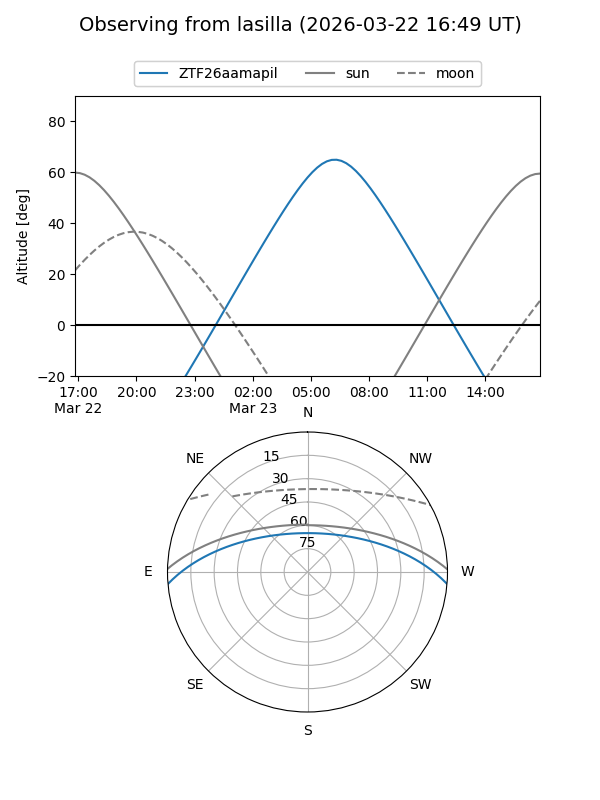
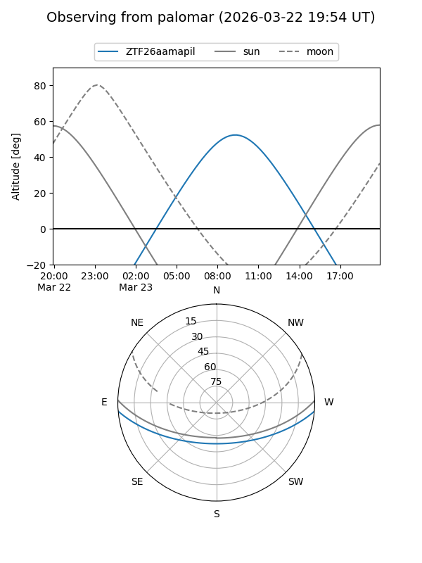

ZTF26aamapil
Target ZTF26aamapil at 2026-03-23 11:00
Aliases and brokers:
FINK: link
Lasair: link
ALeRCE: link
alt names
ZTF26aamapil (ztf,fink_ztf)
Coordinates:
equatorial (ra, dec) = 203.1461,-4.11825
equatorial (HMS+DMS) = 13:32:35.05,-04:07:05.70
galactic (l, b) = (322.1338,+57.21153)
Flags:
Photometry:
last ztfg=19.29
1 ztfg detections
Lightcurve
Visibility


Additional plots